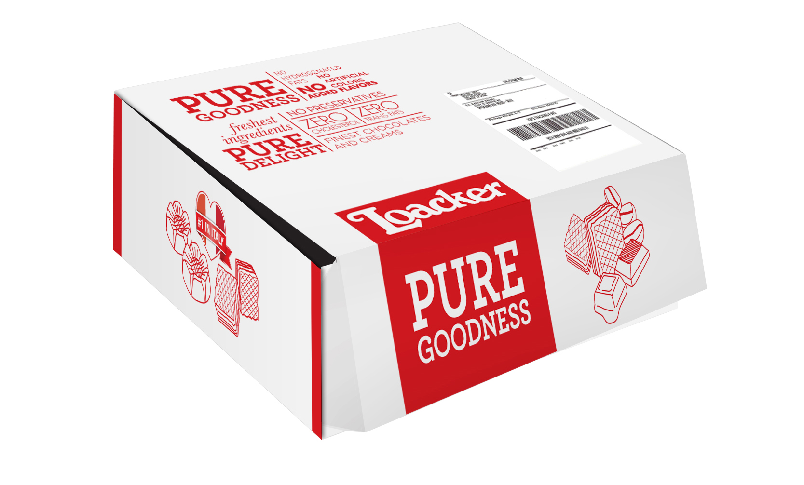
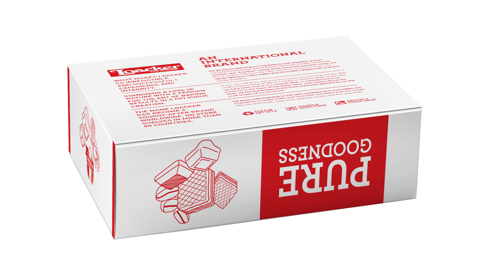
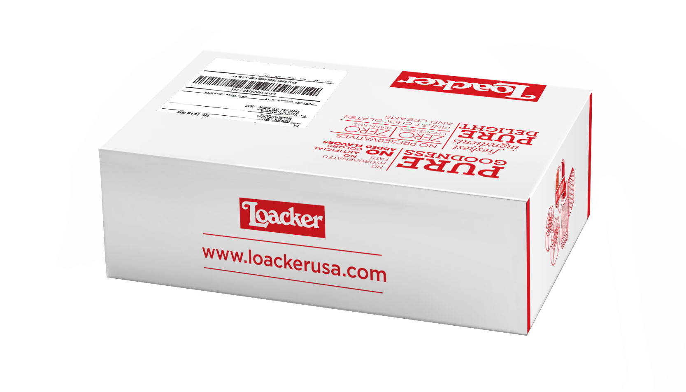
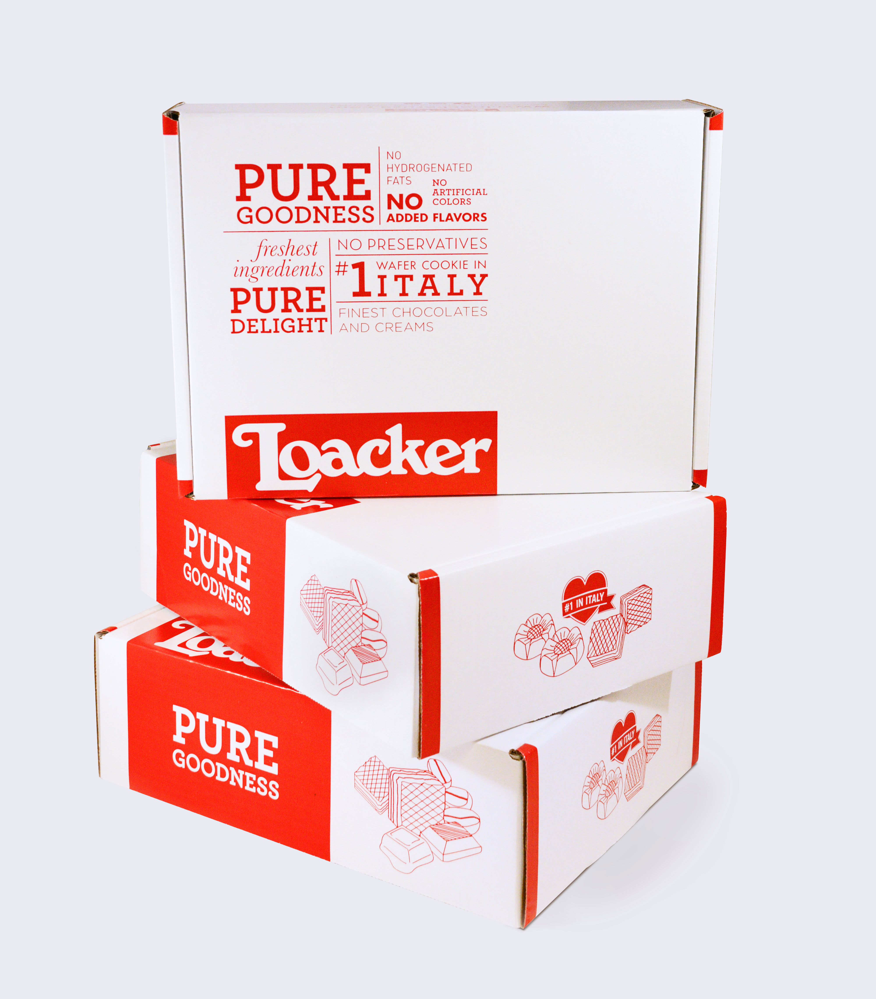

Loacker, an Italian company that produces premium wafers and chocolate, wanted a new design for their shipping boxes in the U.S. They were looking for a design that would highlight the great taste and healthy, fresh ingredients of their products. They also did not want their product to look too expensive. The senior designer created the top of this box while I designed the sides and bottom.



